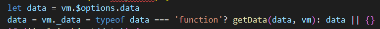
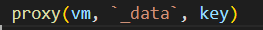
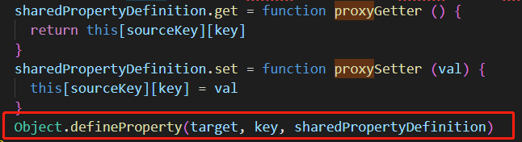
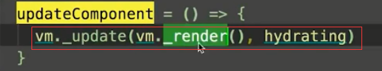

| 认识flow | flow是facebok出的静态检查工具 | vue中用作类型检查,类似于props里面的type用来判断传入数据的类型是否正确 | |
| Vue.js 源码目录设计 |
src ├── core # 核心代码
├── server # 服务端渲染
├── shared # 共享代码
|
||
| Vue.js 源码构建 |
1.Vue.js 源码是基于 Rollup 构建的，它的构建相关配置都在 scripts 目录下。 3.Runtime Only VS Runtime+Compiler |
1.rollup类似于webpack,但是更精简,更适合编译纯js 2.cjs 表示构建出来的文件遵循 CommonJS 规范，es 表示构建出来的文件遵循 ES Module 规范。 umd 表示构建出来的文件遵循 UMD 规范。 3.Runtime Only 我们如果没有对代码做预编译，但又使用了 Vue 的 template 属性并传入一个字符串，则需要在客户端编译模板 |
3.简言之,带complier生成体积会大几kb,而且性能差点,一般使用template属性时才选择这个,否则选择第一个 |
| 1-10 从入口开始 | vue核心源码地址:src\core\instance\init.js | 1.vue没有使用es6的class来实例化而是使用es5的方法然后混入一些mixinf方法来绑定到vue.prototype中是因为这样可以把一个大的类拆分到一个个文件中,可以使逻辑更加清晰,否则class会变得很大 | |
| 2-4 new Vue 发生了什么 | vue实例化之后为什么在methods(){ this.data1 } 这个data1直接可以获取到 | 文件位置:src\core\instance\state.js |
vue首先把data取出来(vm.$options.data)然后赋值给vm._data 之后调用 方法(下图为源码) 里面的definProperty中定义了data里面的值,相当于vue.data1, |
| 2-5 Vue 实例挂载的实现-文档 | $mount到底做了什么 |
$mount首先把传入的参数转换为element,然后进行各种判断, |
最终执行语句  |
| render |
Vue 的 _render 方法是实例的一个私有方法，它用来把实例渲染成一个虚拟 Node。它的定义在 src/core/instance/render.js 文件中 |
vm._render 最终是通过执行 createElement 方法并返回的是 vnode，它是一个虚拟 Node。Vue 2.0 相比 Vue 1.0 最大的升级就是利用了 Virtual DOM |
|
| 更多请看剖析+Vue.js+内部运行机制 | 进阶篇: Vue.js 技术揭秘 |